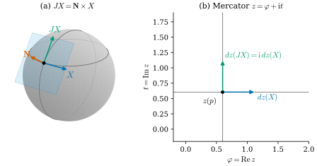
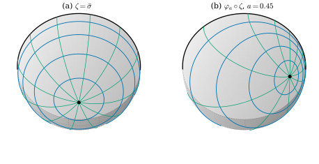
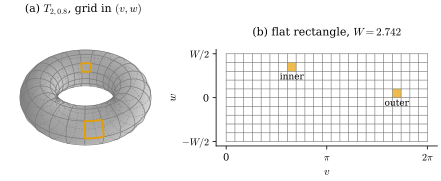

43.3 Conformal Maps of Surfaces and Uniformization
Goals
- oriented surface의 complex structure \(J = \mathbf{N}\times\)를 정의하고, 그것이 metric과 orientation만으로 정해지며 metric의 conformal 배율에 의존하지 않음을 증명할 수 있다.
- surface에서 평면으로 가는 holomorphic map을 \(dz(JX) = \mathrm{i}\,dz(X)\)로 정의하고, \(dz \ne 0\)이면 이것이 orientation을 지키는 conformal map과 같다는 것을 증명할 수 있다.
- Riemann surface와 conformally equivalent metrics를 정의하고, sphere·hyperbolic plane·torus of revolution이 각각 어떤 평평한 metric과 conformally equivalent한지 계산할 수 있다.
- Riemann mapping theorem과 uniformization theorem의 진술과 쓸모, 그리고 남는 자유도(Möbius transformation)를 말할 수 있다.
Prerequisites
- Proposition 43.2.4, Proposition 43.2.7: complex linear differential과 conformal map
- Proposition 38.3.6: \(d\mathbf{x}(X') = \mathbf{N}\times d\mathbf{x}(X)\)와 그 뒤의 관찰
- Definition 38.2.7: conformal coordinates, Example 38.2.9와 Example 38.2.10: stereographic와 Mercator coordinates
- Definition 7.4.1: conformal map, Section 39.4: Gauss–Bonnet
Motivation
Section 43.2는 평면에서 평면으로 가는 map이 conformal인 것을 differential이 \(\mathrm{i}\)와 교환한다는 조건, 곧 Cauchy–Riemann equations로 썼다. 이제 지도 만들기의 원래 문제로 돌아가자. 정의역은 평면이 아니라 휜 surface이다. surface \(S\)에서 평면으로 가는 map \(z\colon S \to \mathbb{C}\)가 각을 보존한다는 것을 어떻게 쓰는가 [CMU-DDG L19–20] slides 46–48?
평면에서 쓴 식 \(df(\mathrm{i}X) = \mathrm{i}\,df(X)\)의 왼쪽에는 tangent vector \(X\)에 \(\mathrm{i}\)를 곱한 것이 있다. surface의 tangent vector는 복소수가 아니므로 \(\mathrm{i}X\)는 뜻이 없다. 그러나 \(\mathrm{i}\)의 기하적 뜻, 곧 \(+90^\circ\) 회전은 surface에도 있다. Section 38.3에서 보았듯이 \(\R^3\)의 surface에서는 unit normal \(\mathbf{N}\)과의 cross product가 tangent plane 안의 \(+90^\circ\) 회전이다(Proposition 38.3.6). 그 회전에 이름을 붙이는 것에서 시작한다.
The Complex Structure of a Surface
이 절에서 \(S \subseteq \R^3\)은 oriented regular surface이고 \(\mathbf{N}\)은 orientation을 주는 unit normal field다. parametrization \(\mathbf{x}\colon U \to S\)로 계산할 때는 \(\mathbf{x}\)가 orientation을 지킨다고(\(\mathbf{x}_u\times\mathbf{x}_v\)가 \(\mathbf{N}\) 쪽) 가정한다.
Definition 43.3.1 (complex structure). \(p \in S\)에서 linear map \(J_p\colon T_pS \to T_pS\)를
로 정하고, 점마다의 \(J_p\)의 모임 \(J\)를 \(S\)의 complex structure(복소구조)라 한다. parametrization \(\mathbf{x}\)의 parameter 평면에서는 \(d\mathbf{x}_q(J_qX) = \mathbf{N}\times d\mathbf{x}_q(X)\)로 정해지는 \(J_q\colon \R^2 \to \R^2\)로 쓴다.
정의가 뜻이 있는지 확인하자. \(w \in T_pS\)이면 \(\mathbf{N}\times w\)는 \(\mathbf{N}\)에 수직이므로 다시 \(T_pS\)에 있다. parameter 판에서는 \(d\mathbf{x}_q\)가 \(\R^2\)에서 \(T_pS\) 위로 가는 linear isomorphism이므로 \(J_q = (d\mathbf{x}_q)^{-1}\circ(\mathbf{N}\times)\circ d\mathbf{x}_q\)가 하나로 정해진다. 이것은 Proposition 38.3.6에서 \(X \mapsto X'\)으로 쓴 map이다. Crane의 노트와 강의 슬라이드는 같은 map을 각각 conformal structure, complex structure라 부른다 [Cr §7.1], [CMU-DDG L19–20] slide 51.
Proposition 43.3.2 (properties of the complex structure). 모든 \(p \in S\)와 \(w \in T_pS\)에 대하여
(a) \(J_p^2 = -\id\)이다.
(b) \(\abs{J_pw} = \abs{w}\), \(\inner{w}{J_pw} = 0\)이고, \(w \ne 0\)이면 \((w, J_pw)\)는 positively oriented basis다(\(\det[w,\ J_pw,\ \mathbf{N}] \gt 0\)).
(c) \(J_pw\)는 (b)의 세 성질로 유일하게 정해진다. 따라서 \(J\)는 tangent plane의 inner product(곧 metric)와 orientation만으로 정해진다. parameter 평면에서 \(J_q\)는 metric \(g_q\)에 대한 \(+90^\circ\) 회전이다.
(d) metric을 양수 배율 \(c^2\)로 바꾸어도(\(\inner{\cdot}{\cdot} \mapsto c^2\inner{\cdot}{\cdot}\)) (b)의 세 성질은 그대로이므로 \(J\)는 바뀌지 않는다. 특히 \(\mathbf{x}\)가 conformal coordinates(\(g = e^{2\mu}(du^2 + dv^2)\))이면 \(J_q\)는 보통의 회전 \(J_q(X^1, X^2) = (-X^2, X^1)\)이다.
Proof. (a) vector triple product 공식 \(a\times(b\times c) = \inner{a}{c}b - \inner{a}{b}c\)(성분으로 확인된다)로 \(\mathbf{N}\times(\mathbf{N}\times w) = \inner{\mathbf{N}}{w}\mathbf{N} - \inner{\mathbf{N}}{\mathbf{N}}w = -w\)이다(\(w \perp \mathbf{N}\), \(\abs{\mathbf{N}} = 1\)). (b) \(\abs{\mathbf{N}\times w} = \abs{\mathbf{N}}\abs{w}\sin(\pi/2) = \abs{w}\)이고 cross product는 두 인자에 수직이다. \(\det[w, \mathbf{N}\times w, \mathbf{N}] = \inner{w\times(\mathbf{N}\times w)}{\mathbf{N}}\)이고 \(w\times(\mathbf{N}\times w) = \abs{w}^2\mathbf{N}\)(triple product)이므로 \(\abs{w}^2 \gt 0\)이다. (c) 2차원 inner product space \(T_pS\)에서 \(w \ne 0\)에 수직인 vector는 한 직선을 이루고, 그중 길이가 \(\abs{w}\)인 것은 둘(서로 반대)이며, orientation 조건이 그중 하나를 고른다. parameter 판은 \(d\mathbf{x}_q\)가 \(g_q\)를 \(T_pS\)의 inner product로, \(\R^2\)의 표준 orientation을 \(\mathbf{N}\)이 주는 orientation으로 옮기므로(\(\mathbf{x}\)가 orientation을 지킨다) 같은 세 성질이 \(g_q\)에 대해 성립한다. Proposition 38.3.6(a)와 같은 결론이다. (d) \(c^2\inner{w}{Jw} = 0\)과 \(c\abs{Jw} = c\abs{w}\)는 원래 식과 동치이고 orientation은 metric과 무관하다. conformal coordinates에서 \(g_q = e^{2\mu}I_2\)이므로 \(g_q\)에 대한 \(+90^\circ\) 회전은 표준 inner product에 대한 \(+90^\circ\) 회전과 같다.
(a)가 \(J\)를 “surface 위의 \(\mathrm{i}\)”라 부르는 이유다. \(\mathrm{i}^2 = -1\)처럼 \(J^2 = -\id\)이다 [CMU-DDG L19–20] slide 51. 그러나 둘은 사는 곳이 다르다. \(\mathrm{i}\)는 복소수에 곱하는 것이고 \(J\)는 tangent vector에 작용한다. 평면 영역에서는 tangent plane을 \(\mathbb{C}\)와 같게 보아 둘을 같게 볼 수 있지만, 일반 surface에는 tangent plane을 \(\mathbb{C}\)와 맞추는 표준적인 방법이 없으므로 \(J\)를 따로 둔다 [Cr §7.1]. (c)와 (d)가 더 중요하다. \(J\)는 길이를 쓰지 않고 각과 방향만 쓴다. 그래서 metric을 점마다 다른 양수 배율로 바꾸어도 \(J\)는 그대로다. complex structure는 surface의 “각의 정보”를 담은 대상이다.
Example 43.3.3 (the sphere). unit sphere의 바깥쪽 \(\mathbf{N} = \mathbf{x}\)에서 동쪽 단위 vector \(e_{\mathrm{E}} = (-\sin\varphi, \cos\varphi, 0)\)와 북쪽 단위 vector \(e_{\mathrm{N}} = (-\cos\theta\cos\varphi, -\cos\theta\sin\varphi, \sin\theta)\)는 \(T_pS\)의 orthonormal basis이고, \(\mathbf{N}\times e_{\mathrm{E}} = e_{\mathrm{N}}\), \(\mathbf{N}\times e_{\mathrm{N}} = -e_{\mathrm{E}}\)이다(성분으로 계산하거나, \((e_{\mathrm{E}}, e_{\mathrm{N}}, \mathbf{N})\)이 오른손 basis임을 쓴다). 곧 \(J\)는 동쪽을 북쪽으로, 북쪽을 서쪽으로 돌린다. 표준 좌표 \((\theta, \varphi)\)에서는 \(\mathbf{x}_\varphi = \sin\theta\,e_{\mathrm{E}}\), \(\mathbf{x}_\theta = -e_{\mathrm{N}}\)이므로 \(J\partial_\varphi = -\sin\theta\,\partial_\theta\), \(J\partial_\theta = \partial_\varphi/\sin\theta\)이다(Example 38.3.7의 \(\partial_\theta' = \partial_\varphi/\sin\theta\)). 이 좌표는 conformal이 아니므로 \(J_q\)는 parameter 평면의 보통 회전이 아니다. Mercator coordinates \((\varphi, t)\)에서는 \(\mathbf{x}_\varphi = \operatorname{sech}t\,e_{\mathrm{E}}\), \(\mathbf{x}_t = \operatorname{sech}t\,e_{\mathrm{N}}\)이므로 \(J\partial_\varphi = \partial_t\), \(J\partial_t = -\partial_\varphi\)로 보통 회전이다(Proposition 43.3.2(d)).
Verification: verify/v-43-3-conformal-surfaces.py
Holomorphic Maps from a Surface to the Plane
이제 평면의 식에서 \(\mathrm{i}X\)를 \(JX\)로 바꾸면 된다. 왼쪽은 surface에서 돌린 뒤 map으로 옮긴 것이고, 오른쪽은 옮긴 뒤 평면에서 돌린 것이다 [CMU-DDG L19–20] slide 52, [Cr §7.2].
Definition 43.3.4 (holomorphic map of a surface). smooth map \(z\colon S \to \mathbb{C}\)가 모든 \(p \in S\)와 \(w \in T_pS\)에서
를 만족하면 \(z\)를 holomorphic map of a surface(곡면의 정칙사상), 줄여서 holomorphic이라 한다. \(dz_p(J_pw) = -\mathrm{i}\,dz_p(w)\)이면 antiholomorphic이라 한다.
\(S\)가 평면의 open set이고 \(\mathbf{N} = e_3\)이면 \(J(a, b, 0) = e_3\times(a, b, 0) = (-b, a, 0)\)이므로 \(J\)는 \(\mathrm{i}\)를 곱하는 것이고, (43.3.2)는 Proposition 43.2.4(c), 곧 Cauchy–Riemann equations다. parametrization으로 계산할 때는 \(z\circ\mathbf{x}\)의 differential \(dz(X) := d(z\circ\mathbf{x})_q(X)\)와 parameter 판의 \(J_q\)로 (43.3.2)를 쓴다.
Proposition 43.3.5 (holomorphic maps of a surface are conformal). smooth map \(z\colon S \to \mathbb{C}\)에 대하여 다음은 동치다.
(i) \(z\)는 holomorphic이고 모든 점에서 \(dz_p \ne 0\)이다.
(ii) \(z\)는 orientation을 지키는 local conformal map이다(Definition 7.4.1, 평면에는 표준 orientation). 이때 길이 배율은 \(e^{\mu(p)} = \abs{dz_p(w)}\)(\(\abs{w} = 1\))이다.
Proof idea: \(T_pS\)의 positively oriented orthonormal basis \((e, Je)\)를 \((1, \mathrm{i})\)와 맞추면 \(dz_p\)는 \(\mathbb{C}\)의 real-linear map이 되고, (43.3.2)는 그것이 complex linear라는 뜻이다. 그러면 Section 43.2의 평면 논증이 그대로 쓰인다.
Proof. \(p\)를 고정하고 \(T_pS\)의 단위 vector \(e\)를 잡자. Proposition 43.3.2(b)로 \((e, Je)\)는 positively oriented orthonormal basis이다. isometry \(\iota\colon \mathbb{C} \to T_pS\), \(\iota(a + \mathrm{i}b) = ae + bJe\)는 orientation을 지키고 \(\iota(\mathrm{i}\xi) = J\iota(\xi)\)를 만족한다(\(\iota(\mathrm{i}) = Je = J\iota(1)\), \(\iota(-1) = -e = J(Je) = J\iota(\mathrm{i})\)이고 둘 다 real-linear이다). \(T := dz_p\circ\iota\colon \mathbb{C} \to \mathbb{C}\)라 하자. (43.3.2)는 모든 \(w\)에서 성립하는 것이므로 \(T(\mathrm{i}\xi) = dz_p(J\iota\xi) = \mathrm{i}\,T(\xi)\)와 동치이고, 이것은 \(T\)가 complex linear라는 뜻이다. (i)⇒(ii): Lemma 43.2.1(a)로 \(T(\xi) = c\xi\), \(c = T(1) = dz_p(e) \ne 0\)이다. 따라서 \(\abs{dz_p(\iota\xi)} = \abs{c}\abs{\xi} = \abs{c}\abs{\iota\xi}\)이고, 편극으로 \(\inner{dz_p(w_1)}{dz_p(w_2)} = \abs{c}^2\inner{w_1}{w_2}\)이다. \(\det T = \abs{c}^2 \gt 0\)이고 \(\iota\)가 orientation을 지키므로 \(dz_p\)도 지킨다. \(\abs{c} = \abs{dz_p(e)}\)는 \(e\)의 선택에 무관하고(위의 식에서 \(\abs{dz_p(w)} = \abs{c}\abs{w}\)), parametrization으로 쓰면 \(\abs{d(z\circ\mathbf{x})(\mathbf{x}_u)}/\abs{\mathbf{x}_u}\)이므로 smooth이다. (ii)⇒(i): \(dz_p\)는 각을 보존하므로 \(T\)도 각을 보존하는 injective linear map이고, Proposition 7.4.4와 \(\det T \gt 0\)으로 \(T\)는 rotation의 양수배다. Proposition 43.2.7의 증명처럼 그 행렬은 Lemma 43.2.1(a)(iii)의 꼴이므로 \(T\)는 complex linear이고, (43.3.2)가 성립하며 \(dz_p \ne 0\)이다.
conformal coordinates는 바로 holomorphic map의 예를 준다. parametrization \(\mathbf{x}\colon U \to S\)가 conformal coordinates이고 orientation을 지키면 그 inverse \(z = \mathbf{x}^{-1}\colon \mathbf{x}(U) \to U \subseteq \mathbb{C}\)는 holomorphic이다. \(z\circ\mathbf{x}\)가 항등 map이라 \(dz(X) = X^1 + \mathrm{i}X^2\)이고, Proposition 43.3.2(d)에서 \(J_q\)가 보통 회전이므로 \(dz(J_qX) = -X^2 + \mathrm{i}X^1 = \mathrm{i}\,dz(X)\)이기 때문이다. 거꾸로 Proposition 43.3.5에서 \(dz \ne 0\)인 holomorphic local coordinate는 conformal coordinates다. 곧 Theorem 38.2.12가 말하는 conformal coordinates의 존재는 holomorphic local coordinate의 존재와 같다.
Example 43.3.6 (holomorphic maps of the sphere and the cylinder). (a) Mercator. Example 38.2.10의 \((\varphi, t)\)는 바깥쪽 \(\mathbf{N}\)에 대해 orientation을 지키는 conformal coordinates이므로 \(z = \varphi + \mathrm{i}t\)는 sphere에서 두 극과 meridian 하나를 뺀 곳에서 holomorphic이다. (b) stereographic projection. Example 38.2.9의 \((u, v)\)는 conformal이지만 바깥쪽 \(\mathbf{N}\)에 대해 orientation을 뒤집는다(남극에서 \(\mathbf{x}_u\times\mathbf{x}_v\)가 안쪽을 향한다). 그래서 북극에서의 stereographic projection \(\sigma = u + \mathrm{i}v\)는 바깥쪽 \(\mathbf{N}\)에 대해 antiholomorphic이고, \(\zeta := \bar\sigma\)가 holomorphic이다. 같은 \(\sigma\)가 안쪽 \(\mathbf{N}\)에 대해서는 holomorphic이다. holomorphic이냐는 orientation의 선택에 달려 있다. (c) cylinder. 반지름 \(r\)인 cylinder \(\mathbf{x}(u, v) = (r\cos u, r\sin u, v)\)는 바깥쪽 \(\mathbf{N}\)에 대해 orientation을 지키고 \(g = r^2du^2 + dv^2 = r^2(du^2 + (dv/r)^2)\)이므로 \(z = u + \mathrm{i}v/r\)가 holomorphic이다(Exercise 43.3.2). 그러면 holomorphic의 합성 \(e^{\mathrm{i}z} = e^{-v/r}e^{\mathrm{i}u}\)(Exercise 43.2.3과 같은 chain rule)은 cylinder 전체에서 punctured plane \(\mathbb{C}\setminus\{0\}\) 위로 가는 injective holomorphic map이다. \(u\)는 각이 되고 \(-v/r\)는 반지름의 \(\log\)가 되므로, 이 map의 inverse를 cylinder의 “log 좌표”라 할 수 있다.
Verification: verify/v-43-3-conformal-surfaces.py
Figure 43.3.1은 (a)를 한 점에서 본다. 왼쪽 (a)는 unit sphere의 점 \(p\)(\(\theta = 1.0\), \(\varphi = 0.6\))에서 tangent plane(하늘색), 동쪽 단위 vector \(X\)(파랑), \(JX = \mathbf{N}\times X\)(초록), \(\mathbf{N}\)(주홍)이다. 초록은 북쪽을 향한다(Example 43.3.3). 오른쪽 (b)는 Mercator 지도에서 같은 두 vector의 image다. \(dz(X)\)는 실수축 방향으로 길이 \(1/\sin 1.0 = 1.188\)이고, \(dz(JX)\)는 그것을 정확히 \(90^\circ\) 돌린 \(\mathrm{i}\,dz(X)\)다. surface에서 돌린 것(초록)의 image가 지도에서 돌린 것과 같다는 것이 (43.3.2)다.

Non-example 43.3.7 (the standard coordinates of the sphere). \(z = \varphi - \mathrm{i}\theta\)는 sphere의 표준 좌표에서 만든 map이고, \(-\theta\)가 북쪽으로 증가하므로 orientation은 Mercator와 같다. Example 43.3.3의 \(J\partial_\varphi = -\sin\theta\,\partial_\theta\)를 쓰면 \(dz(J\partial_\varphi) = -\sin\theta\,dz(\partial_\theta) = \mathrm{i}\sin\theta\)이고, \(\mathrm{i}\,dz(\partial_\varphi) = \mathrm{i}\)이다. 둘은 적도(\(\sin\theta = 1\))에서만 같으므로 \(z\)는 holomorphic이 아니다. 이것은 Figure 38.2.1(a)의 ellipse, 곧 이 좌표가 conformal이 아니라는 것(\(E \ne G\))의 다른 표현이다. 이 map으로 만든 지도(equirectangular projection)는 극 근처에서 동서 방향으로 늘어난다.
Riemann Surfaces and the Riemann Mapping Theorem
holomorphic이라는 조건 (43.3.2)는 \(J\)만 쓴다. \(J\)는 각과 orientation만으로 정해지고 길이를 모른다(Proposition 43.3.2(c)(d)). 그렇다면 \(\R^3\)이나 metric 없이 \(J\)만 주어진 surface에서도 holomorphic map을 말할 수 있다. 이것이 다음 정의의 생각이다.
Definition 43.3.8 (Riemann surface). oriented surface \(S\)와, 점마다 linear map \(J_p\colon T_pS \to T_pS\)를 정하는 smooth field \(J\)로 \(J_p^2 = -\id\)이고 \(w \ne 0\)이면 \((w, J_pw)\)가 positively oriented인 것의 쌍 \((S, J)\)를 Riemann surface(리만 곡면)라 한다.
Definition 43.3.1에 따라 \(\R^3\)의 모든 oriented regular surface는 \(J = \mathbf{N}\times\)로 Riemann surface다. 더 일반적으로 oriented surface에 metric \(g\)가 있으면(Section 38.2의 abstract metric) “\(g\)에 대한 \(+90^\circ\) 회전”이 Riemann surface를 준다. Proposition 43.3.2(d)에 따라 \(g\)와 \(e^{2\mu}g\)는 같은 \(J\)를 준다. 곧 Riemann surface라는 구조에는 각의 정보만 들어 있고 길이의 정보는 들어 있지 않다 [Cr §7.1]. 거꾸로 모든 \(J\)는 어떤 metric의 회전이다(Exercise 43.3.5). Definition 43.3.4의 holomorphic map은 이 \(J\)로 그대로 정의된다.
Remark 43.3.9 (holomorphic atlases). complex analysis는 Riemann surface를 다르게 정의한다. transition map이 모두 holomorphic인 chart의 모임(holomorphic atlas)을 가진 2차원 manifold다. 두 정의는 같다. holomorphic atlas가 있으면 chart \(z\)로 \(J\)를 \(dz(Jw) = \mathrm{i}\,dz(w)\)로 정할 수 있고, transition map이 holomorphic이므로 chart에 무관하다. 거꾸로 \(J\)가 주어지면 모든 점 근처에 (43.3.2)를 만족하는 local coordinate가 있다는 것이 conformal coordinates의 존재(Theorem 38.2.12)이고, 그런 coordinate들 사이의 transition map은 holomorphic이다(Exercise 43.2.3의 합성 법칙). 존재 정리는 진술만 했으므로 이 동치도 진술로 둔다. 2차원에서만 성립하는 사실이다.
평면에 펴는 문제의 기본 정리가 다음이다. disk 모양의 surface는 언제나 disk로 conformal하게 펼 수 있다 [CMU-DDG L19–20] slide 54.
Theorem 43.3.10 (Riemann mapping theorem). (a) \(\mathbb{C}\)의 simply connected open set \(U \ne \mathbb{C}\)에 대해 \(U\)에서 open unit disk \(\mathbb{D}\) 위로 가는 holomorphic bijection(따라서 conformal diffeomorphism)이 있다. (b) 그런 map이 \(f\)이면 다른 모든 것은 \(\varphi\circ f\)이고, \(\varphi\)는 disk의 conformal automorphism \(e^{\mathrm{i}\vartheta}\varphi_a\)(\(\vartheta \in \R\), \(\abs{a} \lt 1\), Example 43.2.12)이다. 따라서 \(U\)의 한 점이 \(0\)으로 가고 그 점에서의 방향이 실수축으로 가도록 정하면 map은 하나다.
이 정리는 진술만 한다(complex analysis의 기본 정리다). 같은 결론이 smooth boundary를 가진 disk 모양의 surface(compact, simply connected, boundary가 원 하나)에서도 성립하고, 이때 conformal map은 boundary까지 smooth하게 늘어난다. 이것도 진술만 한다. 중요한 것은 (b)의 자유도다. 실수 parameter 세 개(\(a\)의 두 성분과 \(\vartheta\))만큼 답이 여럿이다. 이 자유도는 Section 43.5에서 discrete 해를 하나로 정하는 constraint로 다시 나온다.
Example 43.3.11 (the hemisphere onto the disk).
unit sphere의 southern hemisphere \(H = \{x \in S^2 : x^3 \le 0\}\)(바깥쪽 \(\mathbf{N}\))에서 \(\zeta = \bar\sigma = (x^1 - \mathrm{i}x^2)/(1 - x^3)\)은 holomorphic이고(Example 43.3.6(b)), \(\abs{\zeta}^2 = \dfrac{(x^1)^2 + (x^2)^2}{(1 - x^3)^2} = \dfrac{1 + x^3}{1 - x^3}\)이므로 \(x^3 \le 0\)에서 \(\abs{\zeta} \le 1\)이고 등호는 적도에서다. 곧 \(\zeta\)는 \(H\)에서 closed unit disk 위로 가는 conformal diffeomorphism이고 남극을 \(0\)으로 보낸다. Theorem 43.3.10(b)에 따라 \(\varphi_a\circ\zeta\)(\(\abs{a} \lt 1\))도 그렇다. 이것은 \(\zeta^{-1}(a)\)를 \(0\)으로 보낸다. \(a = 0.45\)이면 그 점은 \(\big(\tfrac{2a}{1 + a^2}, 0, -\tfrac{1 - a^2}{1 + a^2}\big) = (0.748, 0, -0.663)\)이다. Section 43.5는 icosphere에서 자른 hemisphere mesh(ch43.hemisphere)를 discrete 방법으로 펴서 \(\zeta\)와 비교한다.
Verification: verify/v-43-3-conformal-surfaces.py
Figure 43.3.2는 두 map을 hemisphere 위에서 비교한다. 두 패널 모두 southern hemisphere를 아래에서 본 것이고, disk의 polar grid(원 \(\abs{w} = 0.2, \dots, 0.8\)은 파랑, 반지름은 초록, boundary circle은 검정)를 map의 inverse로 hemisphere에 되돌려 그렸다. 왼쪽 (a)는 \(\zeta\)의 grid로, 남극(검은 점)을 중심으로 한 circle of latitude와 meridian이다. 오른쪽 (b)는 \(\varphi_{0.45}\circ\zeta\)의 grid로, 원들이 오른쪽으로 치우친 점을 둘러싼다. 두 grid 모두 원과 반지름이 직각으로 만나고, 작은 칸이 정사각형에 가깝다. 두 map 모두 conformal이기 때문이다. 어느 것이 “옳은” 지도인지는 conformality만으로 정할 수 없다.

Conformally Equivalent Metrics and Uniformization
metric의 관점으로 말을 바꾸자. conformal map \(\varphi\colon S_1 \to S_2\)는 (43.1.1)에 의해 \(S_2\)의 metric을 당겨 오면 \(S_1\)의 metric의 \(e^{2\mu}\)배가 되는 map이다. 그러면 “\(S_1\)을 \(S_2\)로 conformal하게 편다”는 문제는 “\(S_1\) 위에서 metric을 점마다 배율만 바꾸어 \(S_2\)의 metric으로 만든다”는 문제와 같다 [CMU-DDG L19–20] slides 55–56.
Definition 43.3.12 (conformally equivalent metrics). surface 위의 두 metric \(g\), \(\tilde g\)에 대해 smooth 함수 \(\mu\)가 있어 \(\tilde g = e^{2\mu}g\)이면 \(g\)와 \(\tilde g\)를 conformally equivalent metrics(등각 동치인 계량)라 한다. 이것은 equivalence relation이고(\(\mu \mapsto -\mu\), \(\mu_1 + \mu_2\)), equivalence class \([g]\)를 \(g\)의 conformal class(등각류)라 한다.
\(e^{2\mu}\)로 쓰는 것은 Section 38.2와 같은 이유다. 배율이 언제나 양수이고, \(\mu\)는 아무 실숫값이나 될 수 있으며, 서로 역수인 두 배율이 \(\mu\)와 \(-\mu\)로 대칭이다 [CMU-DDG L19–20] slide 56. 비예: cylinder의 metric \(r^2du^2 + dv^2\)와 평면 metric \(du^2 + dv^2\)는 \(r \ne 1\)이면 같은 \((u, v)\) 좌표에서 conformally equivalent하지 않다. 두 행렬 \(\diag(r^2, 1)\)과 \(I_2\)가 비례하지 않기 때문이다. 그러나 좌표를 \((u, v/r)\)로 바꾸면 conformally equivalent하다(Example 43.3.6(c)). conformal equivalence는 같은 점 위의 두 metric 사이의 관계이고, 좌표를 바꾸는 map은 따로 생각해야 한다.
Proposition 43.3.13 (what a conformal class determines). \(\tilde g = e^{2\mu}g\)이면 (a) 두 tangent vector 사이의 각은 \(g\)와 \(\tilde g\)로 잰 값이 같다. (b) 같은 orientation에서 두 metric이 주는 complex structure \(J\)가 같다. (c) 따라서 \(z\colon S \to \mathbb{C}\)가 holomorphic인지는 conformal class만으로 정해진다.
Proof. (a) \[ \cos\angle_{\tilde g}(X, Y) = \frac{e^{2\mu}g(X, Y)}{e^{\mu}\abs{X}_g\,e^{\mu}\abs{Y}_g} = \cos\angle_g(X, Y) \] 이다. (b) Proposition 43.3.2(d)를 점마다 \(c = e^{\mu(p)}\)로 쓴다. (c) (43.3.2)는 \(J\)만 쓴다.
Example 43.3.14 (three metrics that are conformally flat). (a) sphere. stereographic coordinates에서 unit sphere의 metric은 \(\tfrac{4}{(1 + u^2 + v^2)^2}(du^2 + dv^2)\)이므로(Example 38.2.9), 북극을 뺀 sphere의 metric은 평면 metric과 \(\mu = \log 2 - \log(1 + u^2 + v^2)\)로 conformally equivalent하다. (b) hyperbolic plane. running example \(\mathbb{U}^2\)의 metric \((dx^2 + dy^2)/y^2\)는 정의부터 \(\mu = -\log y\)로 평면 metric과 conformally equivalent하다. 그래서 \(\mathbb{U}^2\)에서 두 곡선의 각은 평면에서 잰 각과 같다(Proposition 43.3.13(a)). (c) torus of revolution. \(T_{R,r}\)의 running example parametrization에서 \(g = r^2du^2 + \rho^2dv^2\), \(\rho = R + r\cos u\)이다(Notation). \(dw = r\,du/\rho\)가 되도록 \(w(u) = \int_0^u\frac{r}{R + r\cos s}\,ds\)로 두면
이고(\(\abs{u} \lt \pi\)에서. 적분은 반각 치환 \(s = \tan(u/2)\)으로 계산한다), \(u\)가 한 바퀴 도는 동안 \(w\)는 길이 \(W = 2\pi r/\sqrt{R^2 - r^2}\)인 구간을 지난다. 따라서 \((v, w)\)는 conformal coordinates이고, \(T_{R,r}\)의 metric은 변이 \(2\pi\)와 \(W\)인 직사각형의 마주 보는 변을 붙인 flat torus의 metric과 conformally equivalent하다. \((R, r) = (2, 0.8)\)이면 \(W = 2.7422\)이고 비 \(W/2\pi = r/\sqrt{R^2 - r^2} = 0.4364\)이다. 바깥쪽 \(\mathbf{N}\)에 대해서는 \((v, w)\)의 순서가 orientation을 지키므로(\(\mathbf{x}_u\times\mathbf{x}_v\)가 안쪽, Notation) \(z = v + \mathrm{i}w\)가 holomorphic이다.
Verification: verify/v-43-3-conformal-surfaces.py
Figure 43.3.3이 (c)를 보인다. 왼쪽 (a)의 torus에 그린 회색 선은 \(w\)를 같은 간격(\(W/10\))으로, \(v\)를 같은 간격(\(2\pi/23\))으로 나눈 grid다. 바깥 적도 근처(\(u \approx 0\))에서는 \(w\)의 선이 tube 둘레 방향으로 넓게 벌어지고, 안쪽 적도 근처에서는 촘촘하다. 그런데 주황으로 표시한 두 칸은 크기는 달라도 둘 다 거의 정사각형이다(옆변의 비 \(0.741/0.737\)과 \(0.372/0.375\)). 오른쪽 (b)는 같은 grid를 \((v, w)\) 평면에 그린 것으로 모든 칸이 같은 크기의 정사각형(가로 \(0.2732\), 세로 \(0.2742\))이다. torus 위에서 칸의 크기는 배율 \(\rho = e^{\mu}\)만큼 다르고, 모양은 같다. 이것이 conformal equivalence다. 3D로 돌려 볼 수 있는 interactive version이 있다.

세 예의 공통점은 휜 metric이 평평한 metric의 배율 변화라는 것이다. curvature는 그 배율 \(\mu\)에 들어 있다. 닫힌 surface 전체에 대해서는 다음이 성립한다 [CMU-DDG L19–20] slide 57.
Theorem 43.3.15 (uniformization). \(S\)가 boundary 없는 compact connected oriented surface이고 \(g\)가 metric(예: \(\R^3\)에서 induced metric)이면, smooth \(\mu\colon S \to \R\)가 있어 \(e^{2\mu}g\)의 Gaussian curvature가 상수 \(1\), \(0\), \(-1\) 가운데 하나다. 어느 것인지는 genus가 정한다. genus 0(sphere)이면 \(1\), genus 1(torus)이면 \(0\), genus 2 이상이면 \(-1\)이다.
이 정리는 진술만 한다. 증명에는 \(\mu\)에 대한 nonlinear partial differential equation을 푸는 해석학이 필요하다. 부호가 genus로 정해지는 이유는 Gauss–Bonnet theorem이다. \(\int_SK\,dA = 2\pi\chi(S) = 2\pi(2 - 2\cdot\mathrm{genus})\)(Section 39.4)이고 왼쪽은 metric을 바꾸어도 같으므로, 상수 curvature의 부호가 \(\chi\)의 부호와 같아야 한다. Example 43.3.14(c)의 torus는 그 실례로, 상수 curvature \(0\)인 metric \(dv^2 + dw^2\)과 conformally equivalent했다. Gaussian curvature가 metric만으로 정해진다는 것(Theorema Egregium)이 이 진술을 뜻 있게 한다.
쓸모는 표준 영역(canonical domain)이다. surface 위의 문제를 sphere, 평면(또는 flat torus), disk(hyperbolic plane) 위의 문제로 옮겨 풀 수 있고, 두 surface의 데이터를 같은 표준 영역 위에서 비교할 수 있다 [CMU-DDG L19–20] slide 58. 다만 Theorem 43.3.10(b)처럼 자유도가 남는다. genus 0이면 sphere의 Möbius transformation(실수 parameter 6개)만큼 답이 여럿이다.
Remark 43.3.16 (from surface to surface). 지금까지는 surface에서 평면(또는 표준 surface)으로 가는 map을 보았다. \(\R^3\)의 surface를 다른 surface로 conformal하게 변형하는 문제도 있다. 평면에서 rotation과 scaling을 복소수가 표현하듯, \(\R^3\)에서는 quaternion이 rotation과 scaling(stretch rotation)을 표현한다. 두 immersion \(\mathbf{x}_0\), \(\mathbf{x}\)의 tangent plane이 점마다 stretch rotation으로만 다르면 두 surface를 spin equivalent라 한다. tangent vector가 돌고 늘어날 뿐 shear가 없으므로 spin equivalent한 두 surface는 conformally equivalent하다. 거꾸로는 일반적으로 성립하지 않는다(slide 65). 그 변형을 구하는 기본 방정식은 quaternion 값의 Dirac equation이고, Crane, Pinkall, Schröder는 그 discrete 판으로 surface의 conformal 변형을 계산했다 [Crane11], [CMU-DDG L19–20] slides 59–65. 이 study set에서는 이 방향을 다루지 않는다.
Summary
- oriented surface의 complex structure \(J = \mathbf{N}\times\)는 tangent plane의 \(+90^\circ\) 회전이고 \(J^2 = -\id\)이다. metric과 orientation만으로 정해지며 metric의 배율에 무관하다(Definition 43.3.1, Proposition 43.3.2).
- \(z\colon S \to \mathbb{C}\)가 \(dz(JX) = \mathrm{i}\,dz(X)\)이면 holomorphic이고, \(dz \ne 0\)이면 이것은 orientation을 지키는 conformal map과 같다. positively oriented conformal coordinates의 inverse가 그 예다(Definition 43.3.4, Proposition 43.3.5, Example 43.3.6).
- Riemann surface는 complex structure를 가진 surface, 곧 각만 아는 surface다. disk 모양의 surface는 disk로 conformal하게 펼 수 있고 답은 Möbius automorphism만큼 여럿이다(Definition 43.3.8, Theorem 43.3.10).
- \(\tilde g = e^{2\mu}g\)인 두 metric은 conformally equivalent하고 같은 각과 같은 \(J\)를 준다. sphere, hyperbolic plane, torus of revolution은 평평한 metric과 conformally equivalent하고, 닫힌 surface는 언제나 상수 curvature \(1, 0, -1\)의 metric과 conformally equivalent하다(Definition 43.3.12, Example 43.3.14, Theorem 43.3.15).
다음 절에서는 holomorphic이라는 조건을 differential form으로 옮긴다. surface의 1-form Hodge star는 \(J\)로 쓸 수 있고, 그러면 Cauchy–Riemann equations가 \(\star dz = -\mathrm{i}\,dz\)가 된다. 그 위반의 크기를 적분한 것이 conformal energy이고, 그것은 Chapter 42의 Dirichlet energy에서 image의 signed area를 뺀 것과 같다.
Exercises
Exercise 43.3.1 ★ saddle \(\mathbf{x}(u, v) = (u, v, u^2 - v^2)\)(위쪽 \(\mathbf{N}\))의 점 \(q = (0.5, -0.4)\)에서 \(\mathbf{x}_u\)의 \(J\)를 \(\mathbf{N}\times\mathbf{x}_u\)로 계산하고, 그것을 \(\mathbf{x}_u, \mathbf{x}_v\)의 linear combination으로 써서 parameter 판의 \(J_q\partial_u\)를 구하여라. \(J_q\)가 parameter 평면의 보통 회전이 아닌 이유는 무엇인가?
Solution
\(\mathbf{x}_u = (1, 0, 2u) = (1, 0, 1)\), \(\mathbf{x}_v = (0, 1, -2v) = (0, 1, 0.8)\), \(\mathbf{x}_u\times\mathbf{x}_v = (-1, -0.8, 1)\)이므로 \(\mathbf{N} = (-1, -0.8, 1)/\sqrt{2.64}\)이다. \(\mathbf{N}\times\mathbf{x}_u = (-0.8, 2, 0.8)/\sqrt{2.64}\)이다. 이것을 \(a\mathbf{x}_u + b\mathbf{x}_v = (a, b, a + 0.8b)\)와 같게 두면 \(a = -0.8/\sqrt{2.64} = -0.492\), \(b = 2/\sqrt{2.64} = 1.231\)이고 셋째 성분 \(a + 0.8b = 0.8/\sqrt{2.64}\)도 맞는다. 따라서 \(J_q\partial_u = (-0.492, 1.231)\)이다. 이것이 Figure 38.3.2의 초록 \(X'\)(\(b = \sqrt{2/1.32} = 1.231\), \(-0.40b\))다. 보통 회전이면 \((0, 1)\)이어야 한다. 이 좌표에서 metric이 \(g_q = \begin{pmatrix} 2 & 0.8 \\ 0.8 & 1.64 \end{pmatrix}\)로 \(I_2\)의 상수배가 아니므로(conformal coordinates가 아니므로) \(g_q\)에 대한 회전이 parameter 평면의 회전과 다르다(Proposition 43.3.2(c)(d)).
Verification: verify/v-43-3-conformal-surfaces.py
Exercise 43.3.2 ★ 반지름 \(r\)인 cylinder \(\mathbf{x}(u, v) = (r\cos u, r\sin u, v)\)(바깥쪽 \(\mathbf{N}\))에서 \(J\partial_u\)와 \(J\partial_v\)를 구하고, \(z = u + \mathrm{i}v/r\)가 holomorphic이고 \(z = u + \mathrm{i}v\)는 \(r \ne 1\)이면 holomorphic이 아님을 (43.3.2)로 보여라.
Solution
\(\mathbf{x}_u = (-r\sin u, r\cos u, 0)\), \(\mathbf{x}_v = (0, 0, 1)\), \(\mathbf{N} = (\cos u, \sin u, 0)\)이다. \(\mathbf{N}\times\mathbf{x}_u = (0, 0, r) = r\mathbf{x}_v\), \(\mathbf{N}\times\mathbf{x}_v = (\sin u, -\cos u, 0) = -\mathbf{x}_u/r\)이므로 \(J\partial_u = r\partial_v\), \(J\partial_v = -\partial_u/r\)이다. \(z = u + \mathrm{i}v/r\)이면 \(dz(\partial_u) = 1\), \(dz(\partial_v) = \mathrm{i}/r\)이고 \(dz(J\partial_u) = r\cdot\mathrm{i}/r = \mathrm{i} = \mathrm{i}\,dz(\partial_u)\), \(dz(J\partial_v) = -1/r = \mathrm{i}\cdot\mathrm{i}/r = \mathrm{i}\,dz(\partial_v)\)이다. basis에서 성립하므로 linearity로 모든 vector에서 성립한다. \(z = u + \mathrm{i}v\)이면 \(dz(J\partial_u) = r\mathrm{i}\)이고 \(\mathrm{i}\,dz(\partial_u) = \mathrm{i}\)이므로 \(r = 1\)일 때만 같다.
Exercise 43.3.3 ★ hyperbolic plane \(\mathbb{U}^2\)에서 곡선 \(x = 0\)(\(y \gt 0\))과 원 \(x^2 + y^2 = 1\)이 점 \((0, 1)\)에서 이루는 각을 metric \((dx^2 + dy^2)/y^2\)로 계산하여라. 또 점 \((x, y)\)에서 \(\mathbb{U}^2\)의 complex structure를 구하여라(orientation은 \((x, y)\)의 순서).
Solution
\((0, 1)\)에서 \(x = 0\)의 접선 방향은 \((0, 1)\), 원의 접선 방향은 \((1, 0)\)이다. metric은 \(g = y^{-2}I_2\)이므로 \(g((0, 1), (1, 0)) = 0\)이고 각은 \(90^\circ\)다. 평면에서 잰 각과 같다(Proposition 43.3.13(a), \(\mu = -\log y\)). complex structure는 metric의 상수배와 무관하므로(Proposition 43.3.2(d)) 모든 점에서 보통 회전 \(J(X^1, X^2) = (-X^2, X^1)\)이고, \(z = x + \mathrm{i}y\)는 \(\mathbb{U}^2\)에서 holomorphic coordinate다. 곧 \(\mathbb{U}^2\)는 Riemann surface로서 upper half-plane 그 자체다. 길이는 다르지만(Exercise 38.2.5) 각은 같다.
Exercise 43.3.4 ★★ (43.3.3)을 유도하여라. 곧 \(\int_0^u\frac{r\,ds}{R + r\cos s}\)를 반각 치환으로 계산하고, \(u \to \pi\)의 극한으로 \(W = 2\pi r/\sqrt{R^2 - r^2}\)를 구하여라. \((R, r) = (2, 0.8)\)에서 \(W\)와, 바깥 적도와 안쪽 적도에서의 배율 \(e^{\mu} = \rho\)의 비를 구하여라.
Solution
\(s = \tan(t/2)\)로 두면 \(\cos t = (1 - s^2)/(1 + s^2)\), \(dt = 2\,ds/(1 + s^2)\)이므로
\[ \begin{aligned} \int\frac{r\,dt}{R + r\cos t} &= \int\frac{2r\,ds}{(R + r) + (R - r)s^2} \\ &= \frac{2r}{\sqrt{R^2 - r^2}}\arctan\Big(\sqrt{\tfrac{R - r}{R + r}}\,s\Big) \end{aligned} \]
이다(\(\int\frac{ds}{a + bs^2} = \frac{1}{\sqrt{ab}}\arctan(\sqrt{b/a}\,s)\), \(a = R + r\), \(b = R - r\)). \(t = 0\)에서 \(0\)이므로 (43.3.3)의 \(w(u)\)다. \(u \to \pi^-\)이면 \(\tan(u/2) \to +\infty\)이고 \(\arctan \to \pi/2\)이므로 \(w \to \pi r/\sqrt{R^2 - r^2}\)이다. \(w\)는 홀함수이므로 \(u \in (-\pi, \pi)\)에서 \(w\)의 범위의 길이는 \(W = 2\pi r/\sqrt{R^2 - r^2}\)이다. \((2, 0.8)\)이면 \(\sqrt{3.36} = 1.8330\)이고 \(W = 5.0265/1.8330 = 2.7422\)다. 배율 \(\rho\)는 바깥 적도에서 \(R + r = 2.8\), 안쪽 적도에서 \(R - r = 1.2\)이므로 비는 \(7/3 = 2.33\)이다. Figure 43.3.3에서 두 주황 칸의 크기 차이(약 \(2\)배, 칸이 적도에서 조금 떨어져 있다)가 이것이다.
Verification: verify/v-43-3-conformal-surfaces.py
Exercise 43.3.5 ★★ 2차원 oriented vector space \(V\)의 linear map \(J\)가 \(J^2 = -\id\)이고 \(w \ne 0\)이면 \((w, Jw)\)가 positively oriented라 하자. \(V\)의 inner product \(g\)로 \(J\)가 \(g\)에 대한 \(+90^\circ\) 회전인 것이 있음을 보이고, 그런 \(g\)는 양수배를 빼면 하나뿐임을 보여라. (그래서 Riemann surface의 \(J\)와 metric의 conformal class가 같은 정보다.)
Solution
\(e \ne 0\)을 하나 잡으면 \((e, Je)\)는 positively oriented basis다(\(Je\)가 \(e\)의 배수 \(ce\)이면 \(J^2e = c^2e = -e\)가 되어 실수 \(c\)에 모순이다). \(g\)를 \((e, Je)\)가 orthonormal이 되도록 정하자. 그러면 \(g\)에 대한 \(+90^\circ\) 회전 \(R\)는 \(Re = Je\), \(R(Je) = -e = J(Je)\)이므로 basis에서 \(J\)와 같고, 따라서 \(R = J\)이다. 유일성: \(J\)가 \(g'\)에 대한 회전이기도 하면 \(g'(e, Je) = 0\)이고 \(g'(Je, Je) = g'(e, e) =: c^2\)이다. 그러면 \(g'\)는 basis \((e, Je)\)에서 \(c^2I_2\)이므로 \(g' = c^2g\)이다. surface에서는 점마다 이렇게 하고 \(e\)를 smooth vector field로 잡으면(국소적으로) smooth한 metric을 얻는다. 곧 \(J\)를 주는 것과 conformal class \([g]\)와 orientation을 주는 것이 같다.
Exercise 43.3.6 ★★
Coding. dgmesh.torus_mesh(2, 0.8, nu, nv)의 vertex마다 torus의 parameter \((u, v)\)를 복원하고, 두 flattening (i) \((v, u)\)와 (ii) \((v, w(u))\)(43.3.3)을 UV map으로 보아 face마다의 \(\sigma_1/\sigma_2\)(Definition 31.6.1, dgmesh.uv_distortion)의 중앙값과 최댓값을 구하여라. 좌표가 끊어지는 \(u = \pi\), \(v = \pi\)를 가로지르는 face는 뺀다. \((n_u, n_v) = (12, 24), (24, 48), (48, 96)\)에서 비교하여라.
Solution
import numpy as np
import dgmesh as dm
R, r = 2.0, 0.8
k = np.sqrt(R * R - r * r)
for nu, nv in ((12, 24), (24, 48), (48, 96)):
V, F = dm.torus_mesh(R, r, nu, nv)
u = np.arctan2(V[:, 2], np.hypot(V[:, 0], V[:, 1]) - R) # tube angle in (-pi, pi]
v = np.arctan2(V[:, 1], V[:, 0])
w = 2 * r / k * np.arctan(np.sqrt((R - r) / (R + r)) * np.tan(u / 2)) # (43.3.3)
keep = (np.ptp(u[F], axis=1) < np.pi) & (np.ptp(v[F], axis=1) < np.pi) # cut the torus open
for name, uv in (("(v, u)", np.c_[v, u]), ("(v, w)", np.c_[v, w])):
s, det = dm.uv_distortion(V, F[keep], uv)
q = s[:, 0] / s[:, 1]
print(f"{nu:2d}x{nv:2d} {name}: median sigma1/sigma2 = {np.median(q):.4f}, max = {q.max():.4f}, "
f"flipped {(det < 0).sum()}")12x24 (v, u): median sigma1/sigma2 = 2.5494, max = 3.5326, flipped 0
12x24 (v, w): median sigma1/sigma2 = 1.1342, max = 1.1916, flipped 0
24x48 (v, u): median sigma1/sigma2 = 2.5126, max = 3.5077, flipped 0
24x48 (v, w): median sigma1/sigma2 = 1.0642, max = 1.0900, flipped 0
48x96 (v, u): median sigma1/sigma2 = 2.5032, max = 3.5019, flipped 0
48x96 (v, w): median sigma1/sigma2 = 1.0325, max = 1.0438, flipped 0(i)은 mesh를 촘촘하게 해도 중앙값 \(2.50\), 최댓값 \(3.50\)에 머문다. \((v, u)\)에서 metric이 \(\rho^2dv^2 + r^2du^2\)이므로 두 방향의 배율의 비가 \(\rho/r\)이고, 이것이 \(1.2/0.8 = 1.5\)에서 \(2.8/0.8 = 3.5\)까지 변하기 때문이다(최댓값은 바깥 적도의 \(3.5\)). (ii)는 \(1.134 \to 1.064 \to 1.033\)으로 mesh 크기에 비례해 \(1\)로 간다. smooth에서는 정확히 conformal이고, 남는 것은 face가 평평하다는 데서 오는 1차 오차다(Example 43.1.6과 같은 현상). 두 경우 모두 뒤집힌 face는 없다. \((v, u)\)와 \((v, w)\)의 순서가 바깥쪽 normal에 대해 orientation을 지키기 때문이다(Example 43.3.14(c)).
Verification: verify/v-43-3-conformal-surfaces.py가 이 코드를 그대로 실행하고 출력을 비교한다.